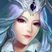
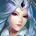
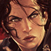
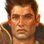

Spirit
Spirit is a third-person multiplayer online battle arena (MOBA) video game which has not been created yet from a company, but written out of the mastermind Alexander Eriksson (Galnearne). This game is inspired by SMITE, Diablo III.
In Spirit, players has control over a hero in third-person, using abilities and tactics against other player-controlled heroes. It is based on two teams battle over the kingdoms, with different game-modes. The goal is usually to destroy the opposing team's towers and barracks, before you get to the "town hall". The battle is a contract named "conquest", a war between kingdoms and their strongest heroes. Each Spirit match is discrete, with all heroes starting off fairly weak but increasing in strength by accumulating items and experience over the course of the game. The heroes is based on fantasy with both angels, demons, humans, fairies and other humanlike creatures.
The gameplay is inspired by SMITE, but the item build and potions is like Diablo series. You also can't buy a Sword while playing a hero with a Bow.
About The Kingdoms, Cities and Game-Modes
The city in the northern mountains is always winter and snow, it has a Kingdom ruled by princess Emiza after her parents died. She has her right hand Elise, and her wise man Dowyn. The city is called Winterfall and there lives Dwarlin, Jack, Kaprisha, Storm and Snow. The Kingdom has always been outside the war, but after Emiza became princess or if you want to say queen; she joined the contract called "conquest" to be seen by everyone and maybe to create a better Kingdom.
The city Port is a Kingdom close to the sea, they have the greatest harbor and also the biggest church in the city. The Kingdom rules by a king and queen, parents to the blond daughters; Asula, Anni, Aenna and Funny. Their best from the church is Malin, Pius, Diana and Ania who also is in the war of Conquest. The best warriors in the Kingdom Port is said to be Asula and Tána, and the other Heroes in Kingdon Port are the lovers Sýzygos & Gynaíka, Allegra, Beatrix, Liza, Melody, Sarah and Yuri.
The city of Mordune is the greatest Kingdom because of their gold mines and iron to their armory and weapons. The Kingdom rules by a king. Their defensive squad is leaded by Fenrir together with Leo who is leading the offensive squad in the military. The squad marching Clain, Diode, Hánet, Kaliyah, Maze, Raizel, Riley, Richard, Selene, Simin, Titania and Wolvern; that is the greatest army in the history. The Kings right hand and left hand is Anders and Tank who is the best to handle the truth from the liars. And the last two is Tigra and Maria who is the best killers in the Kingdom.

City of Peace is not involved with the Conquest contract, and in itself has the biggest problems, because of robbers and killers running loose in the Kingdom. And because of the low economy, poverty spreads between the cities. City of Peace have the bigest Kingdom in the world, but also the bigest arena that they can fight in peace by roles in the law. City of peace has a squad witch is created by making peace in the world, witch has signed on the Conquest contract. The peace heroes are Alaina, Alex, Alisha, Blade, Blake, Chin, Hana, Katana, Lancel, Lotus, Mia, Minae, Neo, Rebecca, Rosie and Sapphire. And the rest who lives in the city of peace, and who's not interestet in a contract, who also just is fighting for fun is Leila, Lilith and Suki.

City of Desert is the first and now the greatest city built, from a prehistory. The queen hates everyone outside the kingdom, and also hate troublemakers. She signed in to the conquest and now created war against the outside world. Their best policy is the cowboy hero Clear who is working alone, but is someone's rival Phia who also taking out bounties. City of Desert also has the brother killers Razor and Rexas who never get caught. The other heroes inside the desert is Bane, Diablo, Defena, Lee, Rohan, Samir, Talon and Tora.

This is the two paths in to two different cities. One to the northern mountains and the other is paced in the desert. They both is same game-mode but randomly chosen map. It is a game-mode with just one lane, with 5v5 in each team and with no spawn-healer. The goal is to destroy their two towers in each team and the "town hall". In due time, different game-modes will be set on this map, as all the other maps.

This is the bridge in to the mountain Dowin lives in, and also a secret way throw the mountain to Winterfall in the Kingdom of Ice! This map is build to heroes with the ability to push away others, because of the instant death on the sides of the bridge. This map just has one tower each team, and if it is destroyed, you will lose. You also don't realise, that in this game-mode, everyone has the same hero, like 5v5 with Hánet to use the Blunt Away for the instant kill. The hero and the game-mode can change in due time.
This is the library placed some miles from the Kingdom of Mordune. The owner of this library is Frank - The Alchemist, and everyone who travles a hundred miles to find this library, will live an eternity inside this walls. The others who is study inside this walls is Billy, Bones and Erik, the greatest Wizards in all times. There is one game-mode inside the map "Conquest" with two teams, team Frank, and team Billy, after a story that Billy destroyed the library. There are many such of stories and game-modes, it changes in due time.

Some miles from the city of peace, their are buildings and small villages that has been destroyed from war and disaster. Remains only ruins, graves and sad stories. But it also is this someone who has arrived from the graves under the ruins. Someone who wanted peace and now understand that revansch is the only way to create peace, by a curse from his words that was said "I'll come back and revansh this villages and disaster you has caused". Now this someone is released from the dead and now fighting for revansh under the contract of "conquest". This someone is Fade - The Reaper of Death!

In the eastern forest they have find an anchient Tempel of Spirits. It is said that with this power hiding in the Temple, can create eternal life, or even create curse over a city. In this Forest, you can find the large river of Amazones, where you can find Brynhildr who is a Valkyria and protector of nature. It is said that the Temple of Spirits has created a keeper of the forest, Drya - Keeper of the Nature. You can also find Cicada, Helani, Rogue and Vulpes who loves the forest.
Tempel of Spirits is also a game-mode, that the goal is to gather spirits to activate the chest in the middle of the map, so that the chest can be opened. You have to stay around the chest with your team without the other team inside the circle. If you successing to open the chest, you gain points for your team and it starts over with new spirits around the map. This is like to jungle in the conquest, but just a big jungle with just monsters and buffs, their also debuffs to the other team just to decreases their luck.

This is a island with the biggest volcano in the map. Inside the volcano you can find Pheola - Fighter From The Volcano. This is also a game-mode with 4v4 each team with fireballs falling from the sky that can be your unlucky day to be hit. In this map, it is two lanes with a small jungle, and a lava creature your team can take control of by killing it. It randomly choose a lane and try to destroy the opponent's towers. The goal is to destroy their "town hall", defended by two towers each lane. You can also get gold by killing the Red Dragon inside the volcano on the right side of the map.

City of Forest is hide inside the western forest. The city is ruled by the queen who wants the city to be safe and hidden, but her daughter, princess Chantrea - Huntress of The Moon hate to be hidden and want to save the humanity from the chaos and singed in to the conquest. The other heroes inside this city is their wise man; Grey Wonder and the others; Anthea, Elany, Spiro, Hawk and Magi. In this dark forest, you can find a game-mode with just 3v3 each team, with a Green Dragon in the jungle. The goal is the usual, but just two lanes, two towers each lane and two last towers front of the "town hall".
Inside the western forest you can get lost to the swamp that is cursed as the forest as well. Inside this Swamp you can find Sasha, Talutah and Willow.
The other side of the western forest no one used to be located, their is a Abandoned Castle, and you can't guess who has taken over the plase, yes, the vampire family! Ruled by Dracula, and his brothers and sister Lucifer, Walladin, Vlad and Vladdina.
A mile away from the Abandoned Castle, you can find a village that is abandoned as well. Cursed by a illness that has created zombies. Inside this village, you can find Albin, Raven, Rhian and Sabrine. This game-mode is just a funny map, that you are supposed to survive zombie waves. You can jump up and walk on the houses, destroy some of them and also kill your enemy team just for fun. The winner is to the one team with the highest zombie kills. Goond Luck!

Atlantis is an anchient city lost in the sea, but that you didn't know, it is ruled by a king, yes, Poseidon. His daughter Kida is on the way to the Conquest just to show the power of the Atlantica. Inside the sea you also can find Ashera - The Sea Queen who is not so popular by Poseidon.
Uranus; the city of angels, leaded by Leonora and her right hand Oone who is the leader of the military, and brother to Aria. His leautenant is Lerala who is sister to Leonora. Their best fighter and magic user is Adora and Relani who also trying to stop Leanish who is their black sheep because of her love to power. This is all of the Angel heroes!
The World Map
{kind=link}
Items
{kind=link}
Armor and Magic Protection:
Armor is something that you allways is given from the main armor you buy to your body. .(such as
 Tank's Soul Breathe permanently granting health by killing minions and heroes). Most, but not all, are lost upon death.
Tank's Soul Breathe permanently granting health by killing minions and heroes). Most, but not all, are lost upon death.
Abilities
Buff and Crowd Controlls:
A buff is any status effect given to a champion or a minion that gives them a beneficial boost to their performance. The opposite is called a debuff. Buffs can benefit almost any attribute of a hero, such as health, mana, power, defence, movement or attack speed, but may provide more than mere statistical changes in some cases. Most buffs are temporary, but some may be permanent (such as
Tank's Soul Breathe permanently granting health by killing minions and heroes). Most, but not all, are lost upon death.
Debuff, also called Crowd Control is the opposite of buff, that also can remove the control over a hero with charm, fear, flee, taunt, root or stun. I call it Crowd-mind or Crowd-body, because they are abilities that can remove some of the controls that affects the mind or the body.
The following are the current forms of Crowd-body that exist within Spirit:
Airborne: A unit that is airborne is unable to control its movement, attack or cast abilities for the duration. Airborne come from the affects of Knock aside, Knockback, Knockup or Pull (such as
 Hánet's Holy Power, Leap of Justice and Blunt Away that has all of the three affects.
Hánet's Holy Power, Leap of Justice and Blunt Away that has all of the three affects.
Disarm: A unit that is disarmed cannot use it's weapon for the duration, otherwise tactical abilities that is used by the heroes weapon.(such as Rexas's Rabbit that disarm target or Smoke Bomb that both blind and disarm units.
Entangle is a combination of Disarm and Root. (such as Cicada's Cocoon Arrow that cocoon the first unit hit, and Webb Trail that ensnare units hit by her dash.
Distract: A unit that is distracted cant move by itself. Usually come from distraction by animals, (such as
 Raven's ultimate Ravens that stop units to go stright that also blind units inside an area.
Raven's ultimate Ravens that stop units to go stright that also blind units inside an area.
Ground: A unit that is grounded is unable to activate mobility spells, like; Knockdown, Root, or (such as
 Lotus's Bladed Wind that stop enemies from doing mobility tactics inside the area.
Lotus's Bladed Wind that stop enemies from doing mobility tactics inside the area.
Slow: A unit that is slowed has reduced movement speed for the duration. The best choice to slow enemies are the heroes with the abilities of the spirit power (such as Spiro
, Albin
, Kaliyah
, Anders
, Tank
).
Cripple: A unit that is crippled has reduced attack speed for the duration.
Chill: A unit that is chilled has reduced movement speed and attack speed for the duration. Chilled units can also be freezed after reach up to 100% reduced speed from chill. Heroes with abilities that can chill units are; Mei
 , Aenna
, Jack
, Aenna
, Jack
 , Tora
, Elise
, Tora
, Elise
 , Dowyn
, Emiza

, Kaprisha
, Dowyn
, Emiza

, Kaprisha
 ).
).
The following are the current forms of Crowd-mind that exist within Spirit:
Blind: A unit that is blinded will miss its auto-attacks for the duration. Blindness usually come from distraction by animals, (such as
 Walladin's Cloud of Bats that blind units inside an area.
Walladin's Cloud of Bats that blind units inside an area.
Nearsight: A unit that is nearsighted has their sight radius reduced by 900 and loses their allied vision, (such as Fade's Black Dust that decreases the sight of all units inside the area.
Charm: A unit that is charmed will move toward the source for the duration, (such as
 Suki's Love Kiss that charm all units in her area.
Suki's Love Kiss that charm all units in her area.
Fear: A unit that is feared move around randomly at reduced movement speed for the duration. (such as
 Dracula's Painful Fear that fear all units in his area.
Dracula's Painful Fear that fear all units in his area.
Taunt: A unit that is taunted will attempt to basic attack the source of the taunt for the duration. (such as
 Diode's Taunt that taunting all units around her.
Diode's Taunt that taunting all units around her.
Silence: A unit that is silenced cannot cast abilities or activate items for the duration, (such as
Raven's Silence that silence units in a target location.
Contrary: A unit that is under the affect of contrary move in the other direction, and the buttons switching places for the player, (such as
 Rose's Contrarwise that make units move in the other direction.
Rose's Contrarwise that make units move in the other direction.
Sleep: A unit that has fallen asleep is unable to move, attack or cast abilities for the duration as long as it doesn't get damaged.
Stun: A unit that is stunned is unable to move, attack or cast abilities for the duration.
Different of Damage:
There are also special affects that are dealing damage, like bleed, burn, true damage, critt damage, physical damage, magical damage, damage by their maximum health or current health.
The following are the Heroes who has the special affects and different of damage that exist within Spirit:
Bleed: A unit that is bleeding take damage over-time for the duration. Damage that usually come from physical attacks by weapons and projectiles can cause they to bleed, (such as
Clear
, Dwarlin
, Snow
 , Chin
, Chin
 , Katana
, Katana
 , Razor
, Rexas
, Sarah
, Tigra
, Razor
, Rexas
, Sarah
, Tigra
 , Vulpes
, Hawk
, Lee
, Vulpes
, Hawk
, Lee
 , Mia
, Mia
 , Allegra
, who has different abilities that affect enemies by bleeding.
, Allegra
, who has different abilities that affect enemies by bleeding.
Burn: A unit that is burning take damage over-time for the duration. Damage that usually come from fire or demonic powers can cause they to burn, (such as
Leo

, Diablo
, Beatrix
, Pheola
, Wolvern
, Von Cane
, Fenrir

, Helani
, Lilith
, Titania
 , who has different abilities that affect enemies by burn, but also one abilities that can burn on hit, (such as
Rilay's Burning Ray that burns enemies on hit per second by a ray.
, who has different abilities that affect enemies by burn, but also one abilities that can burn on hit, (such as
Rilay's Burning Ray that burns enemies on hit per second by a ray.
True Damage: A unit that takes true damage is damaged by something that ignores all armor or magic protection. True damage usually come from acid, or special attacks. True damage can both deal over-time for the duration or instant. (such as
 Simin's Quicksilver that affecting enemies by a poison from her arrows that dealing true damage over-time.
Simin's Quicksilver that affecting enemies by a poison from her arrows that dealing true damage over-time.
Maximum Health or Current Health: A unit that takes damage from its maximum health or current health is usually in true damage and usually come from special attacks and abilities like destroying units who is freezed, or also acid or other special attacks. (Such as
Lucifer
 , Mei
, Raven
, Tána
, Tank
, Suki
, Tigra
, Defena
, Vladdina
, Titania
, Mei
, Raven
, Tána
, Tank
, Suki
, Tigra
, Defena
, Vladdina
, Titania
Critt Damage: A unit that critt on hit, deal 50% bonus damage. Critt Damage activates by your Critical Chance. You always start with 0% Critical Chance. Critical Chance and Critical Damage can be increased by items and buffs from abilities.
Physical Damage: A unit that dealing Physical Damage hit the units Armor.
Piercing Damage: A unit that dealing Piercing Damage ignore 30% of the units Armor.
Magical Damage: A unit that dealing Magic Damage hit the units Magic Protection.
Teams
Team of Chill and Snow
Hunter:
Mei - The Ice Cold Pirate -|-
Support: Kaprisha - The Frost Mage -|-
Mid Lane: Emiza - The Snow Princess -|-
Jungle: Jack - Man of Snow Day -|-
Top Lane: Elise - The Crystal Warrior -|-
The Princess Team of Kingdom Port
Hunter:  Anni - The Friend of Animals -|-
Support:
Anni - The Friend of Animals -|-
Support:  Asula - Armored Princess -|-
Mid Lane: Fanny - The BABOOM -|-
Asula - Armored Princess -|-
Mid Lane: Fanny - The BABOOM -|-
Jungle: Aenna - The Cold Ice Bandit -|-
Top Lane: Tána - Hero of Justice -|-
The Strongest Team of Mordune
Hunter: Simin - The Demon Hunter -|-
Support: Diode - The Crusader -|-
Mid Lane:  Maze - The Mage of Magnetism -|-
Maze - The Mage of Magnetism -|-
Jungle: Tigra - The Killing Assassin -|-
Top Lane: Tank - The Soul Stealer -|-
Team of Phoenix
Hunter: Leo - The Eye of A Phoenix -|-
Support: Titania - The Fire Mage -|-
Mid Lane: Yui - The Newborn Phoenix -|-
Jungle: Beatrix - The Beak of A Phoenix -|-
Top Lane: Fenrir - The Armored Phoenix -|-
The Strongest Team of The Desert
Hunter: Clear - The Bloody Cowboy -|-
Support:  Samir - Egyptian Priest -|-
Mid Lane:
Samir - Egyptian Priest -|-
Mid Lane:  Bane - The Expert of Illness -|-
Bane - The Expert of Illness -|-
Jungle:  Rohan - The Scorpion King -|-
Top Lane: Tora - Elementalic Kung Fu Fighter -|-
Rohan - The Scorpion King -|-
Top Lane: Tora - Elementalic Kung Fu Fighter -|-
Team of Angels
Hunter: Aria - The Winged Archer -|-
Support: Adora - Angel of Love -|-
Mid Lane: Relani - The Blinded Angel -|-
Jungle: Oone - The Archangel -|-
Top Lane:  Leonora - Angel of War -|-
Leonora - Angel of War -|-
Team of Vampires
Hunter: Lucifer - The Life Eater -|-
Support: Dracula - Vampire Lord -|-
Mid Lane: Vladdina - The Blood Sucking Vampire -|-
Jungle: Walladin - The Bat Master -|-
Top Lane:  Vlad - Vampiric Swordsman -|-
Vlad - Vampiric Swordsman -|-
The Controller of the Demons
Hunter: Raven - The Silent Sniper -|-
Support: Lilith - The Demon Mother -|-
Mid Lane: Sabrine - The Girl of Fear -|-
Jungle: Diablo - The Demon Child -|-
Top Lane: Wolvern - The Fighting Warlock -|-
The Peace Heroes
Hunter: Lancel - The Longest Sight -|-
Support:  Alaina - The Void Creator -|-
Mid Lane: Mia - The Puppet Master -|-
Alaina - The Void Creator -|-
Mid Lane: Mia - The Puppet Master -|-
Jungle:  Hana - The Pink Samurai -|-
Top Lane:
Hana - The Pink Samurai -|-
Top Lane:  Rebecca - The Shield Master -|-
Rebecca - The Shield Master -|-
Assassin Squad
Hunter:  Blade - The Bladed Magician -|-
Support:
Blade - The Bladed Magician -|-
Support:  Rosie - The Soul Player -|-
Mid Lane: Katana - The Shadow -|-
Rosie - The Soul Player -|-
Mid Lane: Katana - The Shadow -|-
Jungle:  Maria - Masked Wind Bringer -|-
Top Lane: Minae - The Ninja of Japan -|-
Maria - Masked Wind Bringer -|-
Top Lane: Minae - The Ninja of Japan -|-
The Bounty Hunters
Hunter: Snow - The Bounty Hunter -|-
Support: Kaprisha - The Frost Mage -|-
Mid Lane: Lotus - The Moon Phantom -|-
Jungle: Chin - Master of Katana -|-
Top Lane: Clain - The United Ally -|-
The Forest Keepers
Hunter:  Chantrea - Huntress of The Moon -|-
Support: Grey Wonder - The Wise Man -|-
Mid Lane:
Chantrea - Huntress of The Moon -|-
Support: Grey Wonder - The Wise Man -|-
Mid Lane:  Anthea - The Forest Mage -|-
Anthea - The Forest Mage -|-
Jungle:  Drya - Keeper of the Nature -|-
Top Lane: Hawk - The Shapshifter -|-
Drya - Keeper of the Nature -|-
Top Lane: Hawk - The Shapshifter -|-